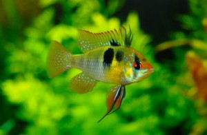

Benvenuti a tutti
Come nasce questo sito? Nasce dall'unione di due passioni: quella per gli acquari e quella per il computer. Di mestiere non faccio ne' l'uno ne' l'altro ma sono un semplice impiegato amministrativo che ha la passione per i computer, per i videogiochi e per gli acquari. Se, come me, siete anche voi appassionati di acquari ma non sapete da dove iniziare, probabilmente dopo aver dato uno sguardo al sito avrete le idee un po' piu' chiare e saprete in linea generale come orientarvi. Tenete presente che io parto dal presupposto che nessuno nasce con le conoscenze inculcate nella mente ma le stesse si acquisiscono mediante l'informazione e che solo quando si inizia in qualche modo a sapere qualcosina ci si accorge di quanto in realta' dobbiamo ancora imparare. Io non pretendo, ne' mi permetto assolutamente di insegnarvi tutto, in quanto il modo migliore per imparare qualcosa e' applicarcisi. Questo sito vi dara' solo qualche piccola indicazione di base su come mettere su un acquario e come mantenerlo in efficenza, poi stara' a voi farlo risplendere nel vostro salone. Ebbene a questo punto iniziamo a sfogliare le pagine del sito ed allestiamo il nostro acquario.